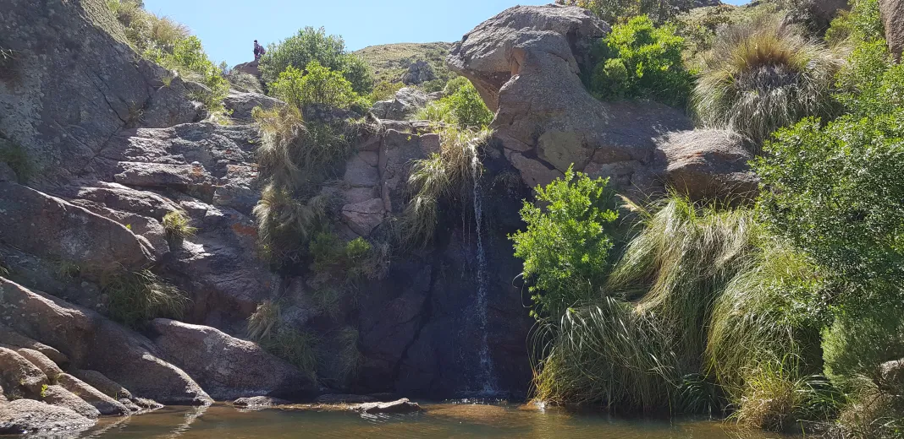
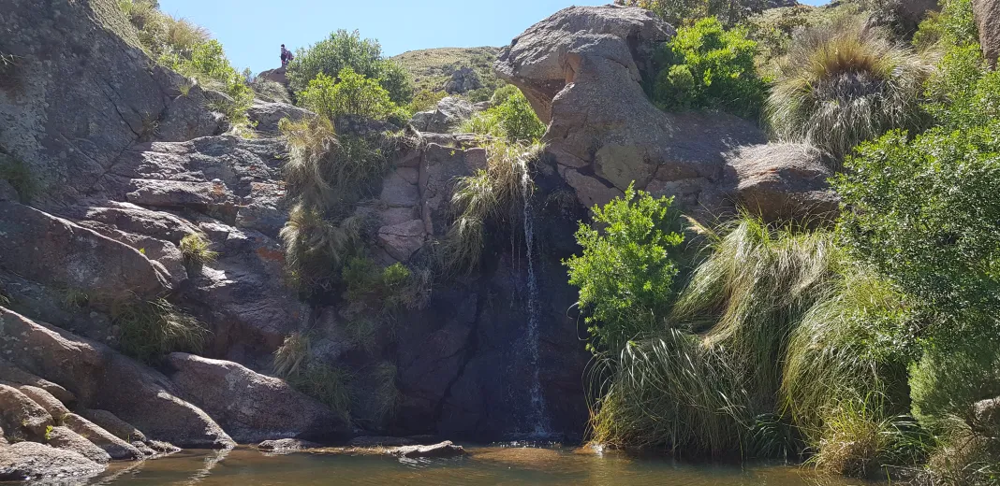

Conoce Argentina
viaja con Horizontes y descubri las maravillas de Argentina
viaja con Horizontes y descubri las maravillas de Argentina


Bariloche, en la Patagonia argentina, es un paraíso de belleza natural y encanto alpino. Destacados: Naturaleza Exuberante: Montañas, lagos cristalinos y bosques de ensueño. Deportes de Invierno: Esquí, snowboard y trineo en el Cerro Catedral. Sabores Locales: Chocolate artesanal, cordero patagónico y truchas frescas. Atracciones: Recorrido Escénico: Circuito Chico para vistas panorámicas. Glaciares y Cascadas: Excursión al Cerro Tronador. Colonia Suiza: Encanto alpino y gastronomía suiza en la Patagonia. Experiencias Culturales: Fiesta Nacional de la Nieve: Celebración invernal con deportes y eventos. Arte Mapuche: Artesanías y tradiciones de la cultura indígena.
Chubut: Descubre un Paraíso Natural en la Patagonia Chubut, en la Patagonia argentina, es un destino turístico único que combina paisajes impresionantes, una rica historia y una hospitalidad incomparable. Destinos Emblemáticos: Península Valdés: Observación de ballenas, orcas, pingüinos y elefantes marinos en su hábitat natural. Parque Nacional Los Alerces: Bosques de alerces milenarios, ideal para senderismo, kayak y pesca. Trevelin y la Ruta del Té Galés: Historia de los colonos galeses y tradición del té galés. Esquel y el Tren del Viejo Expreso Patagónico: Viaje en el tiempo a bordo de un tren de vapor por paisajes espectaculares. Aventura y Naturaleza: Actividades como trekking, rafting y más, en un entorno natural excepcional. Chubut ofrece una experiencia turística única, donde la biodiversidad, el patrimonio cultural y la aventura se combinan para crear recuerdos inolvidables. ¡Descubre la magia de Chubut en tu próxima aventura!
 

Descubre Córdoba: Un Tesoro Cultural en el Corazón de Argentina Historia y Patrimonio: Fundada en 1573, Córdoba es famosa por su centro histórico, que incluye la Manzana Jesuítica y la imponente Catedral de Córdoba. Cultura y Arte: La ciudad rebosa de actividad cultural, desde el arte callejero del Barrio Güemes hasta los espectáculos en vivo en el Paseo del Buen Pastor. Naturaleza y Recreación: Las Sierras de Córdoba ofrecen un escape natural con senderismo, cascadas y vistas panorámicas. Gastronomía Cordobesa: Deléitate con el asado argentino, las empanadas y los dulces tradicionales como los alfajores y el dulce de leche. Planifica tu Viaje: Encuentra alojamiento, transporte y eventos locales para aprovechar al máximo tu experiencia en Córdoba. Conclusión: Córdoba ofrece una combinación única de historia, cultura y naturaleza que la convierte en un destino imprescindible en Argentina.
Explora Misiones: Naturaleza, Cultura y Aventura en el Norte de Argentina Naturaleza Exuberante: Destacando las famosas Cataratas del Iguazú y los Parques Nacionales que ofrecen una variedad de paisajes tropicales. Patrimonio Cultural: Las misiones jesuíticas guaraníes y la ciudad de San Ignacio Mini muestran la rica historia de la región. Aventura y Ecoturismo: Desde senderismo hasta actividades acuáticas en los Saltos del Moconá, Misiones ofrece emocionantes experiencias al aire libre. Gastronomía Regional: La cocina misionera fusiona influencias indígenas, españolas y guaraníes en platos auténticos y deliciosos. Planifica tu Viaje: Encuentra alojamiento, transporte y eventos locales para disfrutar al máximo de tu viaje a Misiones.